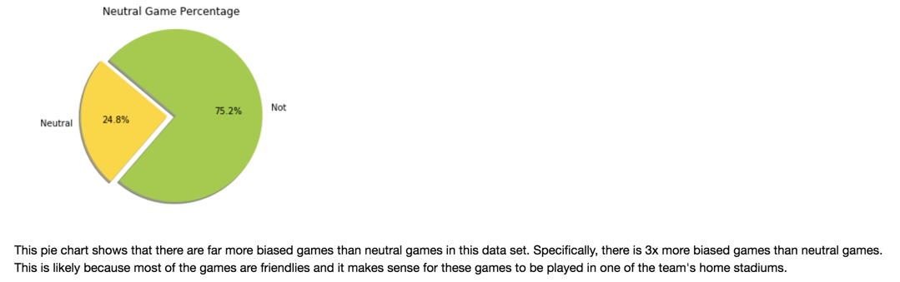
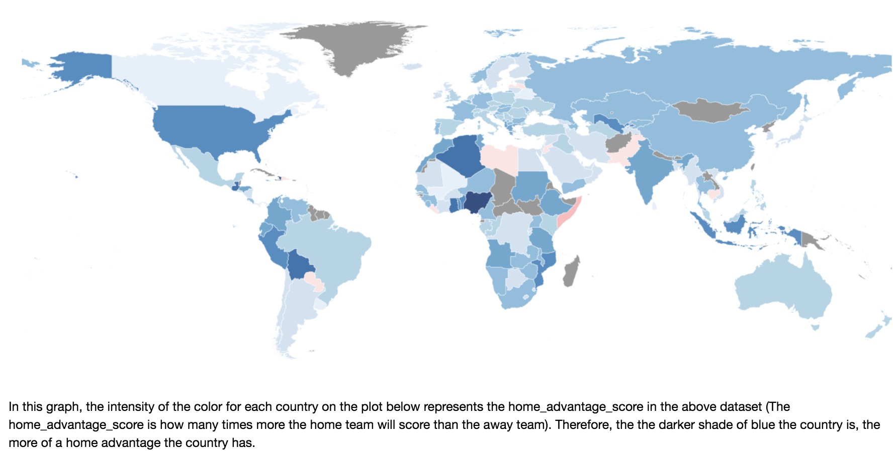
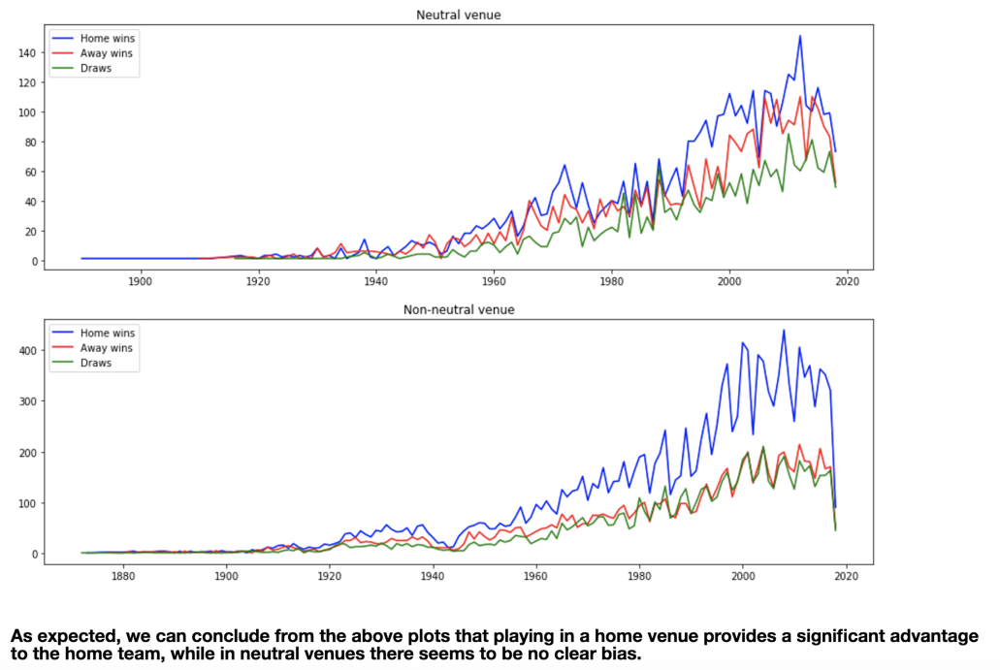
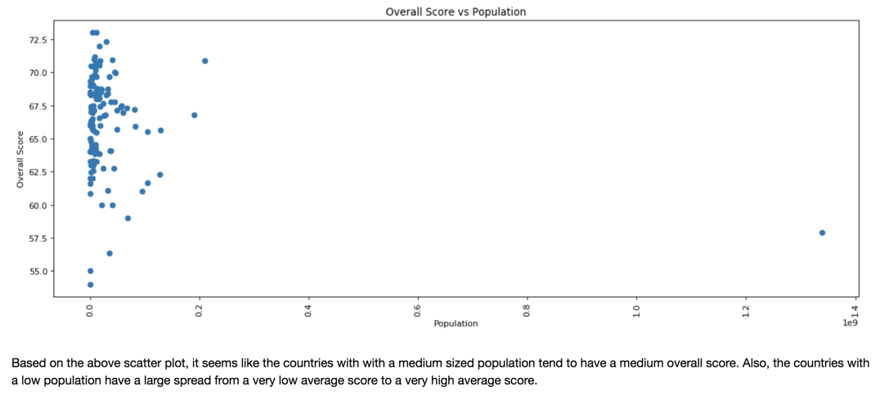

Models
The Development from a Baseline to the Final Ensemble Models
Contents
- Baseline Models
- Improved Models
- Additional Features
- Improved Win/Loss/Draw (RF and Features Added)
- Improved Goal Differential (RF and Features Added)
- Best Model
Baseline Models
Data Cleaning (Baseline)


Win/Loss/Draw: Classification (Baseline)


Goal Differential: Regression (Baseline)


Additional Features

1) Neutral Games vs Biased Games
The following piechart is simply to understand Kaggle's dataset better.
Fig 6.
The following map visualization is based on an adjusted dataframe with home advantage score calculated (function provided below).
Fig 7.

def get_home_team_advantage(goals_df, pval=0.05):
# extract relevant columns
model_goals_df = goals_df[['HomeTeam','AwayTeam','FTHG','FTAG']]
# rename goal columns
model_goals_df = model_goals_df.rename(columns={'FTHG': 'HomeGoals', 'FTAG': 'AwayGoals'})
# reformat dataframe for the model
goal_model_data = pd.concat([model_goals_df[['HomeTeam','AwayTeam','HomeGoals']].assign(home=1).rename(
columns={'HomeTeam':'team', 'AwayTeam':'opponent','HomeGoals':'goals'}),
model_goals_df[['AwayTeam','HomeTeam','AwayGoals']].assign(home=0).rename(
columns={'AwayTeam':'team', 'HomeTeam':'opponent','AwayGoals':'goals'})])
# build poisson model
poisson_model = smf.glm(formula="goals ~ home + team + opponent", data=goal_model_data,
family=sm.families.Poisson()).fit()
# output model parameters
poisson_model.summary()
return np.concatenate((np.array([poisson_model.params['home']]),
poisson_model.conf_int(alpha=pval).values[-1]))
2) Match Success by Venue
The following visualizations show the ratio of matches won by neutrality of venue.
Fig 8. and Fig 9.
Population EDAs
1) Population vs Team/Player Quality
The following two graphs were to demonstrate the effect of population on team rank and player quality (overall score).
Fig 10.

Fig 11.
